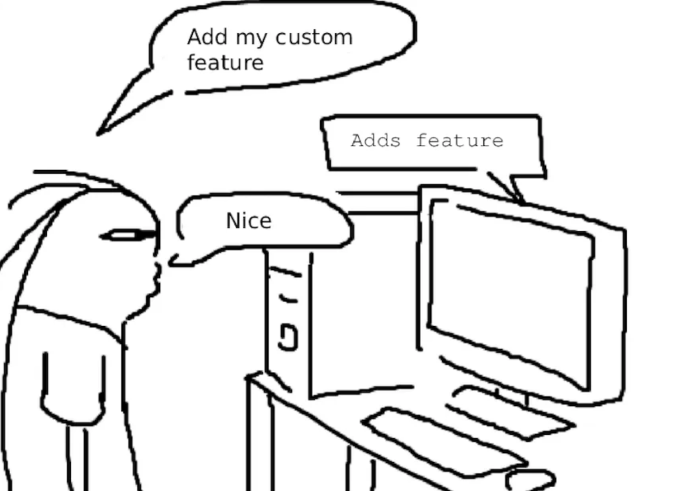
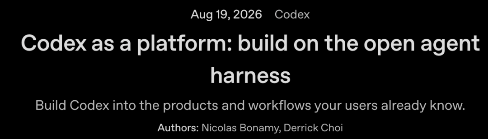
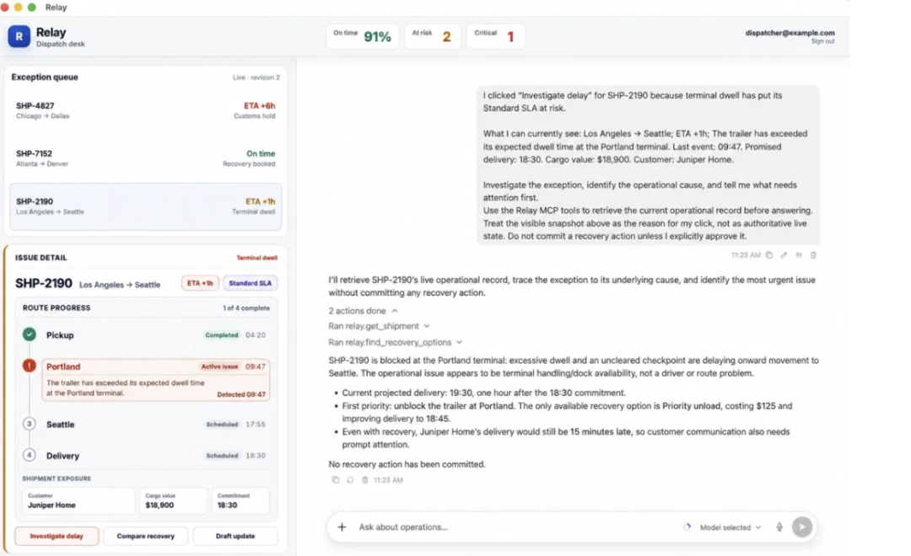

新智元报道
新智元报道

我收藏的长文，全推到我的阅读器上。
每周扫一遍arXiv，跟我方向沾边的论文都留下，贴好标签。
我常看的网站抓下来老是乱码，给它单独写个解析器。
这是Cloudflare首席工程师Jeremy Morrell的「独家需求」，他手上的那个阅读App，一条也做不到。
他想要的是，这几句话说完，就有个机器人把对应的零碎代码挤出来，挂到软件预留好的扩展点上，然后自己跑起来。
做完还能顺手分享出去，谁想要谁拿走。
这，才是他心目中理想的软件样子：可扩展软件（Extensible Software）。
Morrell认为今天我们用的绝大多数Web软件，都是静态的。
这个静态不是指网页技术，而是说你改不动它的逻辑。
功能在发布那天就定稿了，只能用，不能改。
AI让这一切都变了。
人人都能改自己的App，不再是梦。

用户说「加个我要的功能」，电脑当场加上，用户回一句「nice」。Morrell说这就是他想要的软件。

因为，全世界只有你一个人想要。
开发者的时间和注意力有限，所以他们只做服务最大用户群的功能。
有时，就算他们想全做，也做不了。
界面复杂度有上限，每多加一个功能，都是在给不需要它的人添堵。
如果这个功能的受众只有几百人，它反而让剩下几百万人的产品变难用了。
这两条约束，就是过去二十年产品经理一直难以解开的死结。
地图软件的用户需求分布。左侧是所有人都在问的导航问题，右侧长尾是每个人各不相同的冷门需求。
你在某个App里想要的那个小功能，不是做不到，是做起来不划算。
过去一年，自从用户获得vibe coding能力之后，一切都变了。
做一个只服务一个人的工具，成本已经低到不值一提。
Y Combinator的Pete Koomen管这类东西叫小软件（Small Software）。
Y Combinator谈小软件：这类工具往往只服务一个人，或者一小撮人。
会计、医生、律师，还有另外几千种职业，都可以拥有自己趁手的「小软件」。
很显然，想让更多人用上智能体，别指望把他们都变成工程师。
该动的是软件。
代码好写了，问题跟着来了：写完往哪儿放。
今天不少Web产品留给用户的口子是webhook，门槛高得离谱：你得自己跑一整套独立服务，还得扛住投递环节冒出来的各种破事。
真正要让陌生代码在你的系统里跑起来，Morrell认为得过五道关。
第一关，钱。
假设有一百万个用户，每人都挂着自己那几行代码。要是给每人开一个容器，这笔账当场就算不下去。
Morrell给出的标准是：代码没被调用时，成本约等于零；调用一次，价格压到几分之一美分。
再加上编译、存文件、收日志，最后单台机器能塞下多少用户，全看内存开销一个指标。
第二关，冷启动。
用户代码卡在响应请求的关键路径上，等不了一分钟起容器，理想值是个位数毫秒。只跑定时任务或者事件回调的，可以放宽。
第三关，限额。
你永远猜不到用户会写出什么东西。Morrell讲了个他在Heroku听来的真事。
当年有份很火的入门教程，手把手教新手把自己的第一个程序部署到网上。教程里那个程序一共两行：一个死循环，不停地打印hello world。
一个应用凭空冒出来，出生第一秒就每秒吐几百万行日志，永不停止。
而跟着教程走的新手毫不知情，还在那边调出实时日志，指望屏幕上滚出点正常东西。
所以，CPU用多少、内存占多少、能往外发几个网络请求、每个请求多大、返回多少内容、一秒钟能写多少条日志，每一项都得卡死上限。
第四关，隔离，有两层。
崩溃、死循环、疯狂申请内存，不能影响到任何别的用户。恶意代码不能逃逸，也不能窥探别的租户，还得防住Spectre这类推测执行攻击。
第五关，代码要真能做事。什么都碰不到的代码，没有用。
怎么让不可信的代码干活，又不把家底交出去。
Morrell拆解了业内的三代解法。
第一代，直接给API密钥。
Morrell认为这种灵活性很危险。拿到密钥的代码，转手就能POST给第三方；就算它不偷，你的基础设施也随时能被拿去DoS别人。
第二代，加一个中转层（proxy）。
用户手上拿到的是一个不透明令牌，只对代理有意义；代理验完，换成真凭据再转发出去，顺带做白名单和限流。
这确实比裸奔强，但代价在维护上。你想把权限收窄到只允许一部分操作，就得在代理里写过滤逻辑，还得随着上游API演进一直改。
Morrell在文中贴了一段示例，那还只是「读一封已批准的邮件」这一个操作，代码就已经又长又难测。
而且这类逻辑几乎不可能想全。用户会干什么，你猜不到。
第三代，才是关键：能力（capability）。
不给钥匙，也不给地址，直接递过去一个现成的函数。比如「把那封已经批准的邮件取回来」，就这一个动作，别的什么也做不了。
用户的代码手上只有这几个函数。凭据从头到尾没进过它的地盘，就算拿到了数据，也没有通道送出去。
前两行是平台自己的代码，钥匙握在这里。下面的函数是用户写的代码，它连钥匙长什么样都没见。
还有一个附带好处：把一份TypeScript写的能力定义丢给大模型，比甩一堆OpenAPI格式的JSON既省token又更准。
所以，真正的门槛，不是让AI写出代码，是决定这段代码能碰到什么。
能不能写扩展，二十年前就有答案了。大模型改变的是谁能写。
Morrell列了四条路：
最轻的一档是嵌入式解释器：Lua、QuickJS这类，或者干脆自己造一个。
再往上是V8 Isolates。
Google往V8的安全加固里砸了海量的钱和人，直接用就省掉了自己造轮子。
这条路上有Cloudflare的Dynamic Workers、Node的isolated-vm、Rivet的secure-exec。
第三档是MicroVM。
它把完整虚拟机里那些USB、显卡、磁盘的模拟全砍掉，只留骨架，隔离最硬、能跑二进制、有完整POSIX，代价是开销明显更大。
Firecracker、libkrun都在这一档。
第四档是WASM加WASI。
WebAssembly一开始就是一张白纸，连发HTTP请求、读环境变量的模块都没有，权限全靠宿主显式授予。
从安全角度看这是最漂亮的起点，代价是工具链复杂得多。
这四条不是互相替代。
WASM可以跑在V8 Isolates里，也可以跑在MicroVM里。哪怕你拿V8 Isolates或WASM做隔离边界，MicroVM在编译打包、测试扩展这些环节照样有用。
这套东西能不能跑，Morrell自己先试了一把。他把自己的静态博客改造成一个Demo，自嘲是「世界上最小的vibe coding平台」。
本质是个可定制的抓取器：给一个URL，它抓回内容，连同几个预先授予的工具一起交给用户代码，你可以直接改源码然后运行。
十年前，现为Cloudflare Workers技术负责人的Kenton Varda曾做过一个叫Sandstorm.io的创业项目。
它的主张在当年听着有点怪：你打开的每一份文档，都跑在属于它自己的沙箱实例里；程序拿不到任何你没有亲手递过去的东西。不发钥匙，只发能力。
这个项目没做起来。
Varda后来复盘失败原因：没人有那个耐心，把软件一个一个手工打包成那副样子。
十年过去。2026年8月5日，Cloudflare把这套东西以Apache 2.0协议重新开源，名字叫Cloudflare OS。
Cloudflare OS，2026年8月5日以Apache 2.0协议开源。Sandstorm.io十年前赌的那件事，换了个壳回来了。
Varda当天在X上写：这差不多是我那个秘密十年大计的集大成。
当年他缺的那份耐心，AI补上了。
OpenAI在《Codex as a Platform》里开源了Codex的智能体框架，讲的几乎是同一件事：

与其让每个团队都把活儿搬进一个通用编码助手，不如把智能体嵌进他们本来就在用的软件里。
工程流程、运维仪表盘、安全调查、客服控制台，每一样都能装。
分工也划得清楚：界面、业务上下文、工具和审批边界归应用方，智能体循环和沙箱执行归框架。
他们做的示例应用Relay，把一个智能体放在货运仪表盘旁边，接上应用自己的MCP工具，改签之前必须人工批准。

现在不少公司在鼓励员工自己vibe coding做工具，方向对，麻烦在后面。
几百上千个这样的应用，谁来维护？怎么保证它只拿到该拿的那部分数据？访问令牌的权限范围谁定，谁来轮转？会不会顺手把客户信息写进第三方日志？GDPR怎么办？
Morrell给的答案是：给他们一个根本没有令牌可以泄露的地方去部署，数据访问交给平台团队统一兜住合规。
这件事真要成，产品经理的活儿就变了。
你不必覆盖所有长尾需求，但你必须设计稳定的扩展点、能力接口，还有对兼容性的长期承诺。厂商不主动开这个口子，用户一点也扩不动。
Morrell在平台这行干了快十年，他没把话说得很轻松：平台难设计，难运维，难调试。对外暴露API，意味着大量的前期思考和长期支持。
但他还是那两个字：值得。
因为你会被用户的创造力吓一跳，他们做出来的东西，是你从没设想过、甚至以为不可能的。
以后判断一个App好不好，可能要多问一句：它允许你改多少。
参考资料：
https://jeremymorrell.dev/blog/extensible-software-in-the-age-of-llms/%20
https://github.com/cloudflare/cloudflare-os
https://developers.openai.com/blog/codex-as-a-platform
编辑：元宇